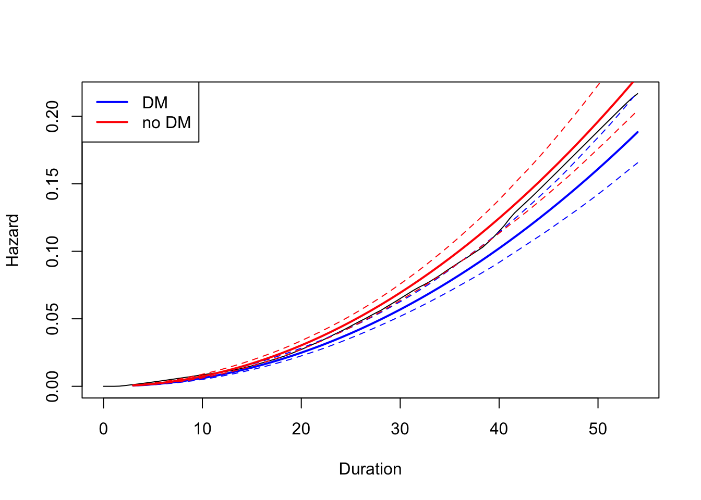
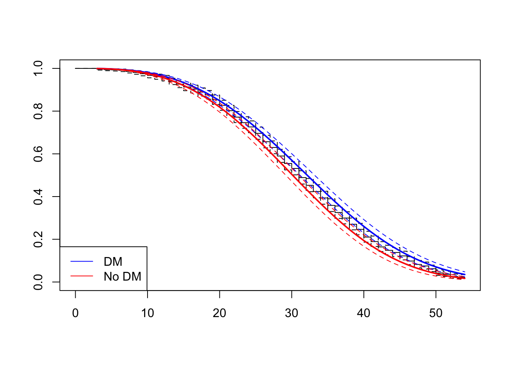
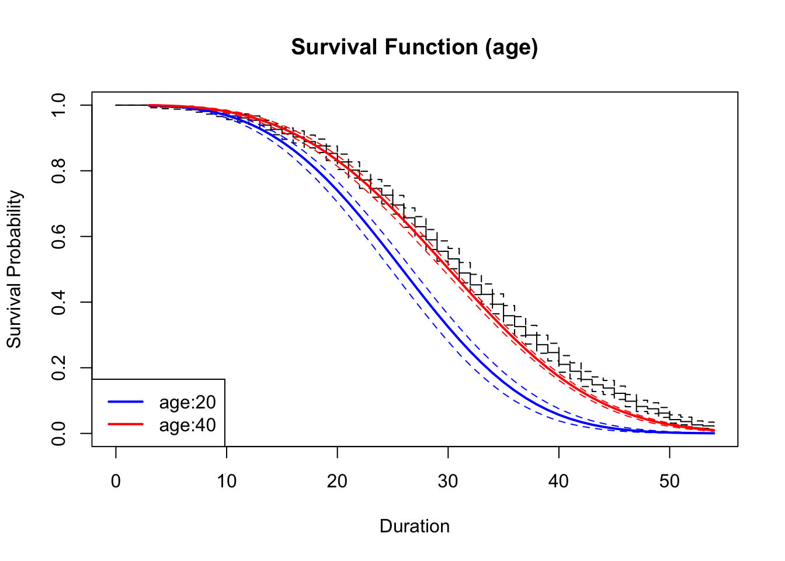
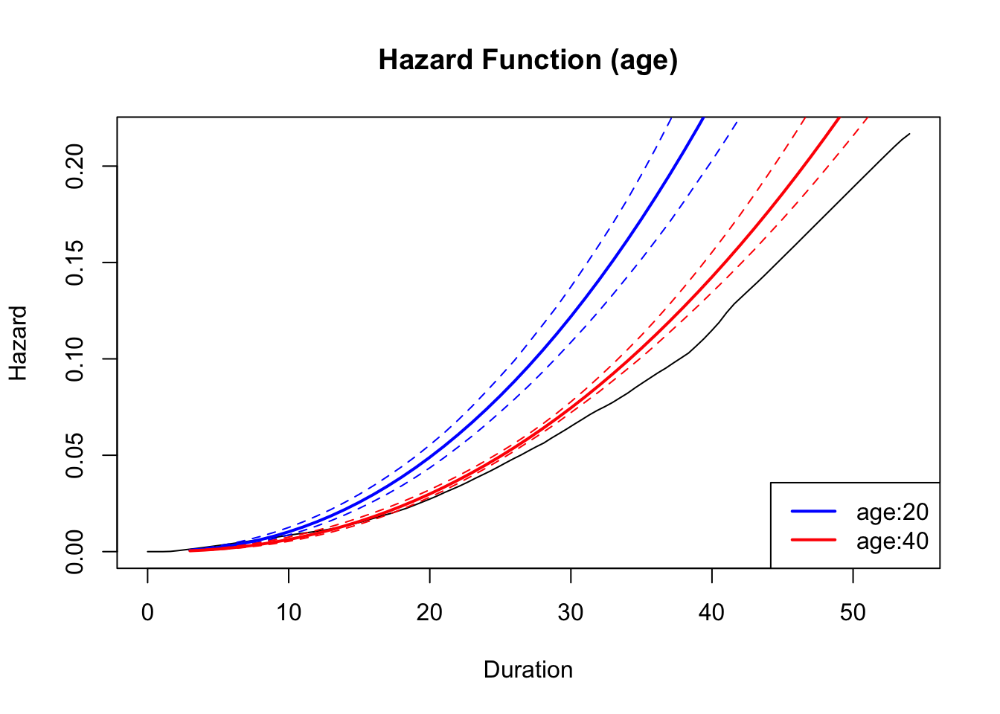
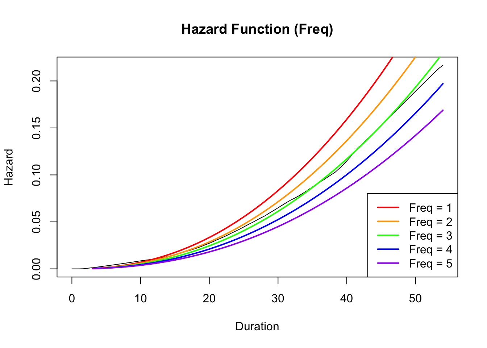
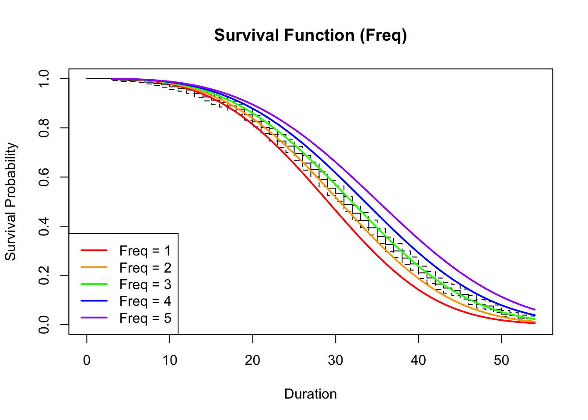
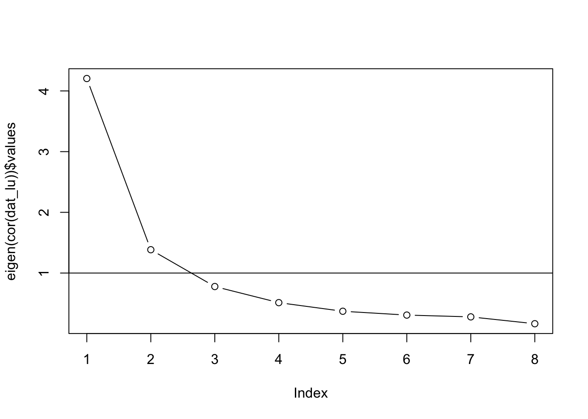

The workspace is initialized by clearing all existing objects to ensure a reproducible environment. Subsequently, the dataset (chapter_09_churn_data.csv) is loaded from the data/ directory. The head() outcome verifies that the data structure has been imported correctly.
Prior to utilizing the proportional hazards model to estimate the differences in churn duration based on DM status, a preliminary analysis is performed.
The summary statistics reveal that 23 customers remained active throughout the observation period. Out of the total 1,000 customers, 977 churn events were observed, ranging from day 3 to day 54. The median survival time was identified as 31 days, indicating a concentration of customer attrition around this point.
Furthermore, the data was stratified by Direct Mail (DM) reception status to visualize the distribution via a boxplot. The analysis indicates that the group receiving DM exhibits slightly higher median and quartile values compared to the non-recipient group. This observation suggests that receiving DM may be associated with prolonged customer retention.
2.2 Estimation of the Proportional Hazards Model
The Cox proportional hazards model (PHM) is utilized to quantify the relationship between the reception of Direct Mail (DM) and customer churn duration.
The results indicate that the Hazard Ratio for DM recipients is 0.821 (95% CI: 0.724–0.931). Since the 95% confidence interval excludes 1, a statistically significant effect is observed. This estimate implies that the instantaneous risk of churn for customers who received DM is approximately 18% lower than for those who did not, assuming other conditions remain constant.
Code
plot(fit_DM, type ="hazard", ci =TRUE,newdata =data.frame(DM =1),col ="blue", lwd =2,xlab ="Duration", ylab ="Hazard",main ="")plot(fit_DM, type ="hazard", ci =TRUE,newdata =data.frame(DM =0),col ="red", lwd =2, add =TRUE)legend("topleft", legend =c("DM", "no DM"),col =c("blue", "red"), lwd =2)

The figure above illustrates the estimated hazard functions stratified by the status of DM reception. The hazard for customers who received DM is observed to be consistently lower than that for customers who did not receive DM across the entire timeline.
Notably, the divergence between the two groups widens progressively during the latter half of the observation period (after day 30). This trend suggests that the receipt of DM exerts a suppressive effect on the risk of churn. Furthermore, the distinct separation of the 95% confidence intervals indicates that the difference between the two hazard functions is statistically significant.
Code
plot(fit_DM, type ="survival", ci =TRUE,newdata =data.frame(DM =1), col ="blue")plot(fit_DM, type ="survival", ci =TRUE,newdata =data.frame(DM =0), col ="red", add =TRUE)legend("bottomleft", c("DM", "No DM"), lwd =1, col =c("blue","red"))

This figure depicts the estimated survival functions stratified by the presence or absence of DM reception. The survival probability for DM recipients remains consistently higher than that for non-recipients, indicating that customers who received DM exhibit a stronger tendency for prolonged service retention.
A marked divergence between the two groups becomes particularly apparent around the 30 to 40-day interval, suggesting that DM reception contributes to the mitigation of customer churn. Furthermore, the limited overlap between the 95% confidence intervals supports the conclusion that the observed difference in survival probabilities is statistically significant.
3. Demographic and Behavioral Characteristics PHM
In the following code, a proportional hazards model based on the Weibull distribution is estimated, utilizing customer demographic attributes (Sex, Age) and behavioral characteristics (Freq, Amount) as explanatory variables. Subsequent to the model estimation, the influence of varying levels of variables that exhibited particularly significant hazard ratios on the survival and hazard functions is visualized.
Both age(Age) and purchase frequency(Freq) were identified as statistically significant factors influencing churn risk. Specifically, the Hazard Ratio (HR) for Age was estimated at 0.976 (95% CI: 0.972–0.980), implying that each additional year of age corresponds to an approximate 2.4% reduction in the instantaneous risk of churn. Similarly, the HR for Freq was calculated as 0.857 (95% CI: 0.814–0.903), indicating that a single unit increase in purchase frequency is associated with a 14.3% decrease in churn risk. Since the 95% confidence intervals for both variables exclude the null value of 1, these effects are confirmed to be statistically significant. Conversely, the HR for gender(Sex) was 0.951 (95% CI: 0.833–1.085), and for purchase amount(Amount) was 0.917 (95% CI: 0.733–1.147). As these intervals encompass 1, no statistically significant impact was observed for these variables, suggesting that their influence on customer churn is limited within the context of this model.
Code
plot(fit_full, type ="survival", ci =TRUE,newdata =data.frame(Sex =mean(data_chap09_churn$Sex),Age =20,Freq =mean(data_chap09_churn$Freq),Amount =mean(data_chap09_churn$Amount)),col ="blue", lwd =2,xlab ="Duration", ylab ="Survival Probability",main ="Survival Function (age)")plot(fit_full, type ="survival", ci =TRUE,newdata =data.frame(Sex =mean(data_chap09_churn$Sex),Age =40,Freq =mean(data_chap09_churn$Freq),Amount =mean(data_chap09_churn$Amount)),col ="red", lwd =2, add =TRUE)legend("bottomleft", legend =c("age:20", "age:40"), col =c("blue", "red"), lwd =2)

Code
plot(fit_full, type ="hazard", ci =TRUE,newdata =data.frame(Sex =mean(data_chap09_churn$Sex),Age =20,Freq =mean(data_chap09_churn$Freq),Amount =mean(data_chap09_churn$Amount)),col ="blue", lwd =2,xlab ="Duration", ylab ="Hazard",main ="Hazard Function (age)")plot(fit_full, type ="hazard", ci =TRUE,newdata =data.frame(Sex =mean(data_chap09_churn$Sex),Age =40,Freq =mean(data_chap09_churn$Freq),Amount =mean(data_chap09_churn$Amount)),col ="red", lwd =2, add =TRUE)legend("bottomright", legend =c("age:20", "age:40"), col =c("blue", "red"), lwd =2)

These graphs illustrate the estimated survival functions and the hazard functions for customers aged 20 (representing the younger demographic) and 40 (representing the middle-aged demographic). A comparative analysis of these indicates that the younger demographic exhibits a consistently higher risk of churn and a correspondingly lower survival probability at any given time point.
Notably, the divergence between the two cohorts expands during the latter half of the observation period, providing visual confirmation that the tendency for customer attrition becomes more moderate as age increases. This observation is fully consistent with the estimated Hazard Ratio (HR = 0.976, 95% CI: 0.972–0.980), thereby corroborating the conclusion that advancing age serves as a significant factor in suppressing churn risk.
Code
colors <-c("red", "orange", "green", "blue", "purple")labels <-paste("Freq =", 1:5)plot(fit_full, type ="hazard", ci =FALSE,newdata =data.frame(Sex =mean(data_chap09_churn$Sex),Age =mean(data_chap09_churn$Age),Freq =1,Amount =mean(data_chap09_churn$Amount)),col = colors[1], lwd =2,xlab ="Duration", ylab ="Hazard",main ="Hazard Function (Freq)")for (i in2:5) {plot(fit_full, type ="hazard", ci =FALSE,newdata =data.frame(Sex =mean(data_chap09_churn$Sex),Age =mean(data_chap09_churn$Age),Freq = i,Amount =mean(data_chap09_churn$Amount)),col = colors[i], lwd =2, add =TRUE)}legend("bottomright", legend = labels, col = colors, lwd =2)

Code
plot(fit_full, type ="survival", ci =FALSE,newdata =data.frame(Sex =mean(data_chap09_churn$Sex),Age =mean(data_chap09_churn$Age),Freq =1,Amount =mean(data_chap09_churn$Amount)),col = colors[1], lwd =2,xlab ="Duration", ylab ="Survival Probability",main ="Survival Function (Freq)")for (i in2:5) {plot(fit_full, type ="survival", ci =FALSE,newdata =data.frame(Sex =mean(data_chap09_churn$Sex),Age =mean(data_chap09_churn$Age),Freq = i,Amount =mean(data_chap09_churn$Amount)),col = colors[i], lwd =2, add =TRUE)}legend("bottomleft", legend = labels, col = colors, lwd =2)

The figures above visualize the hazard and survival functions for customers with usage frequencies(Freq) ranging from 1 to 5. A comparative analysis of the survival functions reveals that customers with higher usage frequencies maintain consistently higher survival probabilities, indicating a tendency for prolonged service retention.
Similarly, the hazard functions demonstrate that groups with higher frequencies experience lower churn hazards at any arbitrary time point, evidencing a suppressive effect on churn risk. This observation aligns with the previously estimated hazard ratios, suggesting that usage frequency serves as a proxy for customer loyalty and acts as a significant determinant in mitigating customer attrition.
Part2. Factor Analysis
1. Preparation for Subsequent Analyses
1.1 Loading the Dataset
The dataset (chapter_11.csv) is loaded from the data/ directory. The head() outcome verifies that the data structure has been imported correctly.
1.3 Calculation Methods for Reliability and Validity Metrics
To facilitate the subsequent computation of Cronbach’s alpha, Composite Reliability (CR), and Average Variance Extracted (AVE), the necessary functions are defined in advance.
A Confirmatory Factor Analysis (CFA) is conducted on a total of eight items, ranging from LUAT1 to LUBE5, under the assumption that these variables are explained by a single latent factor, LU. The dataset dat_lu is constructed by extracting the target items (columns 10 through 17) from data_chap11. Estimation was performed utilizing the sem function from the lavaan package. Subsequently, model fit indices are generated using fitMeasures, and detailed parameter estimates were obtained via the summary function. Finally, the analysis proceeded to the visualization of results and the evaluation of both reliability and convergent validity.
plot(eigen(cor(dat_lu))$values, type ="b")abline(h =1)

Factor Determination
The scree plot indicates that the first two eigenvalues exceed 1.0, suggesting that a two-factor structure might be statistically more appropriate for this dataset. However, as the assignment explicitly requires the implementation of a one-factor model, the following analysis proceeds under the assumption of a single latent factor.
An examination of the model fit indices reveals that both GFI (0.734) and AGFI (0.521) fall below their respective recommended thresholds of 0.90 and 0.85, indicating that the overall model fit is inadequate. Furthermore, error metrics such as RMSEA (0.243) and SRMR (0.130) also fail to meet the established criteria. Consequently, it is concluded that the one-factor model does not demonstrate a satisfactory fit to the data, suggesting that a re-examination of the model structure is necessary.
Code
summary(result_cfa_1F, standardized =TRUE)
lavaan 0.6-21 ended normally after 30 iterations
Estimator ML
Optimization method NLMINB
Number of model parameters 16
Number of observations 322
Model Test User Model:
Test statistic 401.286
Degrees of freedom 20
P-value (Chi-square) 0.000
Parameter Estimates:
Standard errors Standard
Information Expected
Information saturated (h1) model Structured
Latent Variables:
Estimate Std.Err z-value P(>|z|) Std.lv Std.all
LU =~
LUAT1 1.000 0.861 0.538
LUAT2 0.953 0.125 7.619 0.000 0.821 0.528
LUAT3 1.069 0.134 7.962 0.000 0.921 0.562
LUBE1 1.802 0.175 10.271 0.000 1.552 0.881
LUBE2 1.738 0.168 10.325 0.000 1.497 0.894
LUBE3 1.452 0.153 9.467 0.000 1.251 0.745
LUBE4 0.810 0.119 6.784 0.000 0.698 0.451
LUBE5 1.178 0.142 8.282 0.000 1.015 0.596
Variances:
Estimate Std.Err z-value P(>|z|) Std.lv Std.all
.LUAT1 1.818 0.149 12.203 0.000 1.818 0.710
.LUAT2 1.747 0.143 12.230 0.000 1.747 0.722
.LUAT3 1.835 0.151 12.138 0.000 1.835 0.684
.LUBE1 0.692 0.084 8.234 0.000 0.692 0.223
.LUBE2 0.565 0.074 7.670 0.000 0.565 0.201
.LUBE3 1.251 0.112 11.170 0.000 1.251 0.444
.LUBE4 1.906 0.154 12.386 0.000 1.906 0.797
.LUBE5 1.866 0.155 12.030 0.000 1.866 0.644
LU 0.742 0.148 5.020 0.000 1.000 1.000
While factor LU demonstrates strong associations with certain observed variables, notably LUBE1 (0.881) and LUBE2 (0.894), it exhibits weaker associations with others, such as LUBE4 (0.451) and LUAT2 (0.528). Furthermore, all three items in the LUAT series display moderate factor loadings of approximately 0.5, necessitating a cautious interpretation regarding measurement validity. Overall, the analysis reveals a notable disparity in the contribution of individual items to the underlying factor structure.
Code
fit_1F <-cfa(model_cfa_1F, data = dat_lu)lavaanPlot(model = fit_1F,edge_options =list(color ="grey20"),coefs = T, covs = T, stand =TRUE)
The figure above presents the path diagram of the one-factor CFA model, where LU serves as the single latent factor. In this structure, all eight items comprising the LUAT and LUBE series are modeled as being explained by factor loadings deriving from LU. The values annotating each arrow denote the standardized factor loadings (Std.all). Visual inspection confirms that while items such as LUBE1 and LUBE2 exhibit high loadings, the loading for LUBE4 is relatively low in comparison.
Cronbach’s alpha coefficient was 0.869, significantly exceeding the generally accepted reliability threshold of 0.70; thus, the internal consistency among items is determined to be sufficiently high. Similarly, Composite Reliability (CR) was 0.859, also surpassing the benchmark of 0.70, which demonstrates that the observed variables are stably explained by the common latent factor. Conversely, the Average Variance Extracted (AVE) was 0.447, falling slightly below the standard cutoff of 0.50. This result presents a concern regarding convergent validity, and it is possible that the low factor loading of LUBE4 specifically contributed to this reduction in the AVE value.
2.2 Two-Factor CFA
For the purpose of comparison, a Confirmatory Factor Analysis was conducted under the assumption of a two-factor structure, following the exact same procedure.
Code
model_cfa_2F <-' AT =~ LUAT1 + LUAT2 + LUAT3 BE =~ LUBE1 + LUBE2 + LUBE3 + LUBE4 + LUBE5'result_cfa_2F <- lavaan::sem(model_cfa_2F, data = dat_lu)fitMeasures(result_cfa_2F)
The goodness-of-fit indices for the two-factor model—GFI = 0.931 (≥ 0.90), AGFI = 0.869 (≥ 0.85), and SRMR = 0.066 (≤ 0.08)—satisfied the established criteria, indicating that the overall model fit is satisfactory. Conversely, the RMSEA value of 0.114 exceeded the recommended limit (≤ 0.1), which warrants caution. However, given that the other indices are generally favorable, this model is evaluated as exhibiting a superior fit compared to the one-factor model.
Code
summary(result_cfa_2F, standardized =TRUE)
lavaan 0.6-21 ended normally after 30 iterations
Estimator ML
Optimization method NLMINB
Number of model parameters 17
Number of observations 322
Model Test User Model:
Test statistic 98.591
Degrees of freedom 19
P-value (Chi-square) 0.000
Parameter Estimates:
Standard errors Standard
Information Expected
Information saturated (h1) model Structured
Latent Variables:
Estimate Std.Err z-value P(>|z|) Std.lv Std.all
AT =~
LUAT1 1.000 1.284 0.802
LUAT2 1.026 0.065 15.670 0.000 1.317 0.847
LUAT3 1.056 0.068 15.415 0.000 1.356 0.828
BE =~
LUBE1 1.000 1.581 0.897
LUBE2 0.965 0.043 22.562 0.000 1.524 0.910
LUBE3 0.802 0.048 16.729 0.000 1.267 0.755
LUBE4 0.441 0.053 8.382 0.000 0.698 0.451
LUBE5 0.613 0.055 11.148 0.000 0.969 0.570
Covariances:
Estimate Std.Err z-value P(>|z|) Std.lv Std.all
AT ~~
BE 1.154 0.153 7.563 0.000 0.569 0.569
Variances:
Estimate Std.Err z-value P(>|z|) Std.lv Std.all
.LUAT1 0.912 0.100 9.125 0.000 0.912 0.356
.LUAT2 0.686 0.089 7.663 0.000 0.686 0.283
.LUAT3 0.845 0.101 8.346 0.000 0.845 0.315
.LUBE1 0.604 0.082 7.344 0.000 0.604 0.195
.LUBE2 0.483 0.073 6.650 0.000 0.483 0.172
.LUBE3 1.210 0.109 11.151 0.000 1.210 0.430
.LUBE4 1.906 0.154 12.402 0.000 1.906 0.797
.LUBE5 1.956 0.161 12.147 0.000 1.956 0.676
AT 1.649 0.201 8.205 0.000 1.000 1.000
BE 2.498 0.249 10.034 0.000 1.000 1.000
Factor AT exhibited high factor loadings (ranging from approximately 0.80 to 0.85) for all three items (LUAT1–LUAT3), confirming a sufficient association. Regarding the BE factor, while LUBE1–LUBE3 displayed high factor loadings, the loading for LUBE4 was marginally low at 0.451. Similar to the one-factor model, this necessitates a cautious evaluation regarding validity. Conversely, LUBE2 and LUBE1 demonstrated extremely high factor loadings (0.910 and 0.897, respectively), suggesting they can be interpreted as the core observed variables constituting the BE factor.
Code
fit_2F <-cfa(model_cfa_2F, data = dat_lu)lavaanPlot(model = fit_2F,edge_options =list(color ="grey20"),coefs = T, covs = T, stand =TRUE)
This figure presents the path diagram of the measurement model in which two latent factors, AT and BE, correspond to the eight items in the LUAT and LUBE series. In this model, the three items LUAT1 through LUAT3 are mapped to the AT factor, while the five items LUBE1 through LUBE5 are mapped to the BE factor. The values on each arrow represent the standardized factor loadings (Std.all). For the BE factor, LUBE1 (0.90), LUBE2 (0.91), and LUBE3 (0.76) exhibit high loadings, indicating that they represent BE well. Conversely, LUBE4 shows a somewhat low loading of 0.45, suggesting a weak association with BE. LUBE5 also shows a relatively lower loading of 0.57, though this is considered within the acceptable range.
Regarding the AT factor, all three items (LUAT1–LUAT3) demonstrate high factor loadings exceeding 0.80, confirming that AT is measured as a consistent construct. Furthermore, a correlation of approximately 0.57 exists between AT and BE, visually demonstrating that the two factors share a moderate positive association.
Code
alpha.coef(dat_lu[,1:3])
[1] 0.8644639
Code
alpha.coef(dat_lu[,4:8])
[1] 0.8493303
Code
standardizedSolution(result_cfa_2F)
lhs op rhs est.std se z pvalue ci.lower ci.upper
1 AT =~ LUAT1 0.802 0.026 30.791 0 0.751 0.854
2 AT =~ LUAT2 0.847 0.023 36.036 0 0.801 0.893
3 AT =~ LUAT3 0.828 0.025 33.720 0 0.780 0.876
4 BE =~ LUBE1 0.897 0.016 55.385 0 0.866 0.929
5 BE =~ LUBE2 0.910 0.015 58.892 0 0.880 0.940
6 BE =~ LUBE3 0.755 0.027 28.112 0 0.703 0.808
7 BE =~ LUBE4 0.451 0.047 9.625 0 0.359 0.543
8 BE =~ LUBE5 0.570 0.040 14.168 0 0.491 0.648
9 LUAT1 ~~ LUAT1 0.356 0.042 8.513 0 0.274 0.438
10 LUAT2 ~~ LUAT2 0.283 0.040 7.121 0 0.205 0.361
11 LUAT3 ~~ LUAT3 0.315 0.041 7.748 0 0.235 0.395
12 LUBE1 ~~ LUBE1 0.195 0.029 6.691 0 0.138 0.252
13 LUBE2 ~~ LUBE2 0.172 0.028 6.122 0 0.117 0.227
14 LUBE3 ~~ LUBE3 0.430 0.041 10.591 0 0.350 0.509
15 LUBE4 ~~ LUBE4 0.797 0.042 18.838 0 0.714 0.879
16 LUBE5 ~~ LUBE5 0.676 0.046 14.749 0 0.586 0.765
17 AT ~~ AT 1.000 0.000 NA NA 1.000 1.000
18 BE ~~ BE 1.000 0.000 NA NA 1.000 1.000
19 AT ~~ BE 0.569 0.045 12.706 0 0.481 0.656
For both latent factors AT and BE, Cronbach’s alpha coefficients and Composite Reliability (CR) were high, at approximately 0.85, well exceeding the threshold (≥ 0.70). This demonstrates that the observed variables within each factor possess high internal consistency and stably measure the same construct.
Regarding convergent validity, the Average Variance Extracted (AVE) was 0.682 for AT and 0.546 for BE, both surpassing the benchmark of 0.50. In particular, AT exhibited a notably high value of 0.682, indicating that the observed variables strongly reflect the latent factor. Similarly, the AVE for BE (0.546) met the criterion, suggesting that convergent validity is maintained.
Based on these results, it can be concluded that both AT and BE in the two-factor model satisfy sufficient standards in terms of both reliability and validity.
2.3 Comparison of Models
Based on the results obtained, the one-factor and two-factor models are compared. First, as indicated in the previous sections, the two-factor model demonstrates a substantial improvement in goodness-of-fit indices. These comparisons are summarized in the table below.
Index
1-Factor Model
2-Factor Model
Criteria
Comments
GFI
0.734
0.931
\(\ge\) 0.90
Improved in 2-Factor
AGFI
0.521
0.869
\(\ge\) 0.85
Improved in 2-Factor
RMSEA
0.243
0.114
\(\le\) 0.10
High in both, but improved
SRMR
0.130
0.066
\(\le\) 0.08
Clearly improved
Regarding factor loadings, the one-factor model exhibited some low values, particularly for LUBE4 (0.451) and the LUAT items, indicating variation in the factor structure. In contrast, the two-factor model showed high factor loadings (\(\ge\) 0.80) for LUAT1–3 on the AT factor, and LUBE1–3 were also strongly linked to BE. However, LUBE4 remained somewhat low (0.451) even in the two-factor model, suggesting room for improvement.
The comparison of reliability and validity metrics is presented in the following table.
Factor
Model
\(\alpha\)
CR
AVE
Comments
LU
1-Factor
0.869
0.859
0.447
AVE below threshold; concern for convergent validity
AT
2-Factor
0.864
0.865
0.682
All indices are good
BE
2-Factor
0.849
0.850
0.546
All indices within acceptable range
As indicated in the table above, both CR and AVE improved in the two-factor model. Notably, the AVE for the AT factor is very high at 0.682, reflecting an improvement in measurement precision.
In conclusion, the two-factor model is evaluated as superior to the one-factor model across all dimensions: model fit indices, factor loading structure, reliability, and convergent validity. Specifically, structuring the LUAT series and LUBE series as separate factors (AT and BE) yields a more valid and interpretable measurement model.
3. Confirmatory Factor Analysis with Two Factors Excluding LUBE4
Following the same procedure as in the previous section, the model construction, estimation, assessment of goodness-of-fit indices, visualization of results, and evaluation of reliability and validity are conducted. Subsequently, a comparison with the original two-factor CFA and an interpretation of the results are performed.
3.1 Two-Factor CFA Excluding LUBE4
Code
model_cfa_2F_trim <-' AT =~ LUAT1 + LUAT2 + LUAT3 BE =~ LUBE1 + LUBE2 + LUBE3 + LUBE5 'result_cfa_2F_trim <- lavaan::sem(model_cfa_2F_trim, data = dat_lu)fitMeasures(result_cfa_2F_trim)
The model fit indices—GFI = 0.965 (≥ 0.90), AGFI = 0.924 (≥ 0.85), RMSEA = 0.086 (≤ 0.1), and SRMR = 0.06 (≤ 0.08)—all satisfy the established criteria. Consequently, it can be concluded that the overall model fit is excellent.
Code
summary(result_cfa_2F_trim, standardized =TRUE)
lavaan 0.6-21 ended normally after 30 iterations
Estimator ML
Optimization method NLMINB
Number of model parameters 15
Number of observations 322
Model Test User Model:
Test statistic 44.168
Degrees of freedom 13
P-value (Chi-square) 0.000
Parameter Estimates:
Standard errors Standard
Information Expected
Information saturated (h1) model Structured
Latent Variables:
Estimate Std.Err z-value P(>|z|) Std.lv Std.all
AT =~
LUAT1 1.000 1.283 0.802
LUAT2 1.026 0.066 15.656 0.000 1.317 0.846
LUAT3 1.058 0.069 15.419 0.000 1.357 0.829
BE =~
LUBE1 1.000 1.584 0.899
LUBE2 0.971 0.043 22.630 0.000 1.537 0.918
LUBE3 0.787 0.048 16.335 0.000 1.247 0.743
LUBE5 0.600 0.055 10.874 0.000 0.950 0.558
Covariances:
Estimate Std.Err z-value P(>|z|) Std.lv Std.all
AT ~~
BE 1.157 0.153 7.567 0.000 0.569 0.569
Variances:
Estimate Std.Err z-value P(>|z|) Std.lv Std.all
.LUAT1 0.914 0.100 9.141 0.000 0.914 0.357
.LUAT2 0.687 0.090 7.680 0.000 0.687 0.284
.LUAT3 0.841 0.101 8.318 0.000 0.841 0.313
.LUBE1 0.594 0.084 7.075 0.000 0.594 0.192
.LUBE2 0.444 0.074 5.998 0.000 0.444 0.158
.LUBE3 1.262 0.112 11.284 0.000 1.262 0.448
.LUBE5 1.994 0.164 12.187 0.000 1.994 0.689
AT 1.647 0.201 8.198 0.000 1.000 1.000
BE 2.508 0.250 10.037 0.000 1.000 1.000
Factor AT exhibited high factor loadings (ranging from approximately 0.80 to 0.85) for all three items (LUAT1–LUAT3), confirming a sufficient association. Regarding the BE factor, while LUBE1–LUBE3 displayed high factor loadings, the loading for LUBE5 was marginally low at 0.558. Similar to previous models, this necessitates a cautious evaluation regarding validity. However, regarding the other variables, even the lowest value observed was LUBE3 (0.743), which maintains a favorable level; thus, the variables demonstrate a sufficient association with the two factors.
Code
fit_2F_trim <-cfa(model_cfa_2F_trim, data = dat_lu)lavaanPlot(model = fit_2F_trim,edge_options =list(color ="grey20"),coefs = T, covs = T, stand =TRUE)
This structure indicates that the three items LUAT1–LUAT3 correspond to the AT factor, while the items from the LUBE series (LUBE1–LUBE5) correspond to the BE factor. Consistent with the original two-factor model, LUBE1 (0.90), LUBE2 (0.92), and LUBE3 (0.74) exhibit high loadings on the BE factor, indicating that they represent the construct well. Conversely, LUBE5 shows a somewhat lower loading of 0.56. Regarding the AT factor, all three items (LUAT1–LUAT3) demonstrate high factor loadings exceeding 0.80, confirming that AT is measured as a consistent construct. Furthermore, a correlation of approximately 0.57 exists between AT and BE, remaining similar to the original two-factor model.
For both latent factors AT and BE, Cronbach’s alpha coefficients and Composite Reliability (CR) were high, at approximately 0.85, well exceeding the threshold (≥ 0.70). This demonstrates that the observed variables within each factor possess high internal consistency and stably measure the same construct.
Regarding convergent validity, the Average Variance Extracted (AVE) was 0.682 for AT and 0.546 for BE, both surpassing the benchmark of 0.50. In particular, AT exhibited a notably high value of 0.682, indicating that the observed variables strongly reflect the latent factor. Similarly, the AVE for BE (0.546) met the criterion, suggesting that convergent validity is maintained.
Based on these results, it can be concluded that both AT and BE in the two-factor model satisfy sufficient standards in terms of both reliability and validity.
3.2 Comparison of the Two-Factor Models
Based on the results obtained, the two-factor models (with and without LUBE4) are compared. First, as indicated in the previous sections, the latter model demonstrates an improvement in goodness-of-fit indices. These comparisons are summarized in the table below.
Index
Original Model
Model w/o LUBE4
Criteria
Comments
GFI
0.931
0.965
\(\ge\) 0.90
Improved by removing LUBE4
AGFI
0.869
0.924
\(\ge\) 0.85
Improved by removing LUBE4
RMSEA
0.114
0.086
\(\le\) 0.10
Clearly improved and cleared criteria
SRMR
0.066
0.060
\(\le\) 0.08
Slightly improved
Regarding factor loadings, in the original model, LUBE4 was the lowest (0.451), introducing variability to the factor structure. However, by removing this item, LUBE5 became the lowest loading (0.558), while all other items maintained high values of 0.74 or above.
The comparison of reliability and validity metrics is presented in the following table.
Factor
Model
\(\alpha\)
CR
AVE
Comments
AT
Before Removal
0.864
0.865
0.682
All indices are favorable
BE
Before Removal
0.849
0.850
0.546
All indices within acceptable range
AT
After Removal
0.864
0.865
0.682
All indices are favorable
BE
After Removal
0.858
0.867
0.628
All indices are favorable
As shown in the table above, in the model excluding LUBE4, the Average Variance Extracted (AVE) for the BE factor improved significantly, confirming an enhancement in measurement precision. Consequently, values satisfying the established criteria were obtained for all aspects: fit indices, factor loading structure, reliability metrics, and convergent validity.
In conclusion, it is evaluated that a valid CFA model has been successfully constructed, which adequately explains the seven observed variables (excluding LUBE4) using two latent factors, AT and BE.